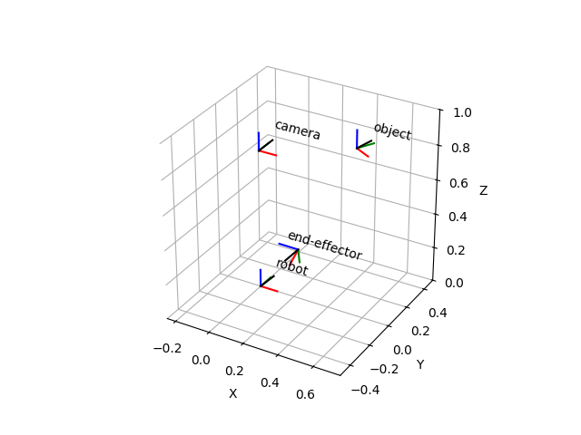

Note
Click here to download the full example code
Transformation Manager¶
In this example, we will use the TransformManager to infer a transformation automatically.
print(__doc__)
import numpy as np
import matplotlib.pyplot as plt
from pytransform3d import rotations as pr
from pytransform3d import transformations as pt
from pytransform3d.transform_manager import TransformManager
random_state = np.random.RandomState(0)
ee2robot = pt.transform_from_pq(
np.hstack((np.array([0.4, -0.3, 0.5]),
pr.random_quaternion(random_state))))
cam2robot = pt.transform_from_pq(
np.hstack((np.array([0.0, 0.0, 0.8]), pr.q_id)))
object2cam = pt.transform_from(
pr.active_matrix_from_intrinsic_euler_xyz(np.array([0.0, 0.0, -0.5])),
np.array([0.5, 0.1, 0.1]))
tm = TransformManager()
tm.add_transform("end-effector", "robot", ee2robot)
tm.add_transform("camera", "robot", cam2robot)
tm.add_transform("object", "camera", object2cam)
ee2object = tm.get_transform("end-effector", "object")
ax = tm.plot_frames_in("robot", s=0.1)
ax.set_xlim((-0.25, 0.75))
ax.set_ylim((-0.5, 0.5))
ax.set_zlim((0.0, 1.0))
plt.show()
Total running time of the script: ( 0 minutes 0.103 seconds)